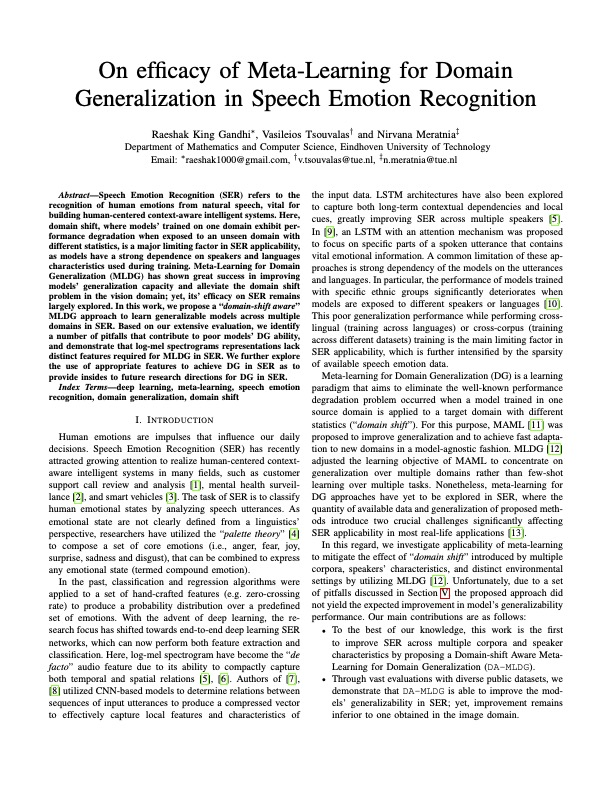
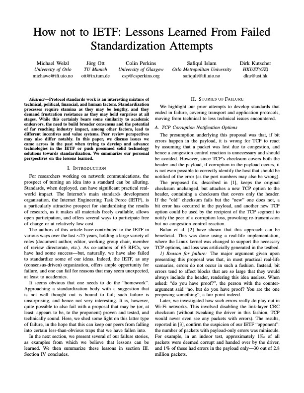
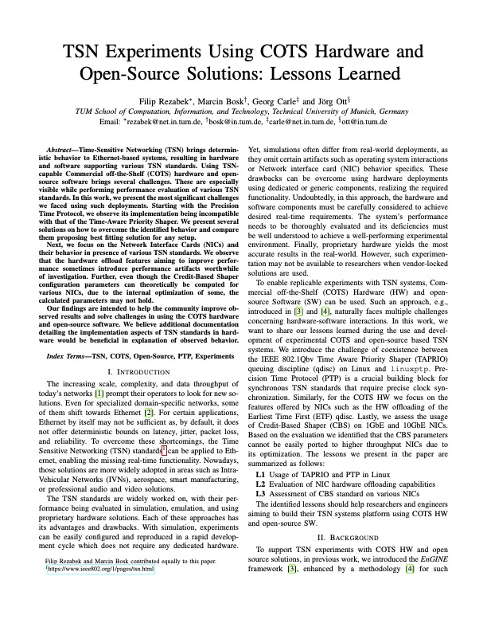
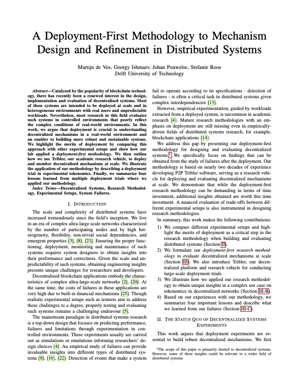

“Learn from the mistakes of others. You can’t live long enough to make them all
yourself.” - Eleanor Roosevelt
ABOUT
Not all research leads to fruitful results, trying new ways or methods may surpass the state of
the art, but sometimes the hypothesis is not proven or the improvement is insignificant. But
failure to succeed is not failure to progress and this workshop aims to create a platform for
sharing insights, experiences, and lessons learned when conducting research in the area of
pervasive computing.
While the direct outcome of negative results might not contribute much to the field, the wisdom
of hindsight could be a contribution itself, such that other researchers could avoid falling
into similar pitfalls. We consider negative results to be studies that are run correctly (in the
light of the current state of the art) and in good practice, but fail in terms of proving of the
hypothesis or come up with no significance. The “badness” of the work can also come out as a
properly but unfittingly designed data collection, or (non-trivial) lapses of hindsight
especially in measurement studies.
We took the insights and discussion from last year and wrote a paper about the collected
information.
You can find a preprint here.
CALL FOR PAPERS
The papers of this workshop should highlight lessons learned from the negative results. The main
outcome of the workshop is to share experiences so that others avoid the pitfalls that the
community generally overlooks in the final accepted publications. All areas of pervasive
computing, networking and systems research are considered. While we take a
very broad view of “negative results”, submissions based on opinions and non-fundamental
circumstances (e.g. coding errors and “bugs”) are not in scope of the workshop as they do not
indicate if the approach (or hypothesis) was bad.
The main topics of interests include (but are not limited to):
Studies with unconvincing results which could not be verified (e.g. due to lack of datasets)
Underperforming experiments due to oversights in system design, inadequate/misconfigured
infrastructure, etc.
Research studies with setbacks resulting in lessons learnt and acquired hindsights (e.g.
hypothesis with too limiting or too broad assumptions)
Unconventional, abnormal, or controversial results that contradict expectations of the
community
Unexpected problems affecting publications, e.g. ethical concerns, institutional policy
breaches, etc.
“Non-publishable” or “hard-to-publish” side-outcomes of the study, e.g . mis-trials of
experiment methodology/design, preparations for proof-of-correctness of results, etc.
We also welcome submissions from experienced researchers that recounts post-mortem of
experiments or research directions they have failed in the past (e.g. in a story-based format).
With this workshop, our aim is to normalize the negative outcomes and inherent failures while
conducting research in pervasive computing, systems and networking, and provide a complementary
view to all the success stories in these fields.
Important Dates
Paper submission: November 18 December 3, 2022 Author notification: January 5, 2023 Camera-ready due: February 5, 2023 Workshop date: March 13, 2023 (tentative)
SUBMISSION GUIDELINES
Regular papers should present novel perspectives within the scope of the workshop: negative
results, lessons learned, and other fruitful “failure” stories. Papers must be in PDF format and
contain 6 pages maximum (including references), but also shorter submissions are welcome. Papers
should contain names and affiliations of the authors (not blinded). All papers must be typeset
in double-column IEEE format using 10pt fonts on US letter paper, with all fonts embedded.
Submissions must be made via EDAS. The IEEE LaTeX and Microsoft Word templates, as well as
related information, can be found at the IEEE Computer Society website.
PerFail will be held in conjunction with IEEE Percom 2023. All accepted papers will be included
in the Percom workshops proceedings and included and indexed in the IEEE digital library Xplore.
At least one author will be required to have a full registration in the Percom 2023 conference
and present the paper during the workshop (either remotely or in location). There will be no
workshop-only registration.
Each accepted workshop paper requires a full PerCom registration (no registration is
available for workshops only).
Otherwise, the paper will be withdrawn from publication.
The authors of all accepted papers must guarantee that their paper will be presented at the
workshop.
Papers not presented at the workshop will be considered as a "no-show" and it will not
be included in the proceedings.
Title: Importance of Methodology in Empirical Studies
Speaker:
Sira Vegas
Technical University of Madrid, Spain
Dr. Sira Vegas is Associate Professor of Software Engineering at UPM since 2008 and a member of
the Empirical Software Engineering Research Group (GrISE). Her research areas are Experimental
Software Engineering and Software Verification and Validation.
In SCOPUS, she has a total of 56 publications indexed, 1,225 times cited (an average of 108
citations per year over the last 5 years) and her H-Index is 16. She has published 27 articles
in JCR journals, 20 of them in the Q1 quartile. She has more than 35 publications in
conferences. Her doctoral thesis was published as a book: Identifying Relevant Information for
Software Testing Technique Selection: An Instantiated Characterization Schema, Kluwer Academic
Publishers in 2003. She has been guest speaker in the Mining Software Repositories (MSR)
conference in 2010, and keynote speaker in the International Doctoral Symposium on Empirical
Software Engineering in 2015. She has been advisor of 5 doctoral theses and 10 Master thesis.
Prof. Vegas has been guest editor of special issues in several highly relevant international
scientific journals such as the Empirical Software Engineering Journal (EMSE) and the
International Journal of Software Engineering and Knowledge Engineering (IJSEKE). She has been a
member of the Review Board of the EMSE journal during the period 2014/2015 (bi-annual position
that is granted to reviewers with a high number of quality reviews). Since October 2018, she is
a member of the Review Board of the IEEE Transactions on Software Engineering journal (TSE). She
is a regular reviewer of JCR Q1 journals, such as IEEE TSE, EMSE, ACM Transactions on Software
Engineering and Methodology (TOSEM) or Information and Software Technology (IST).
Sira has served in the Program Committee of conferences such as the International Conference on
Empirical Software Engineering (ESEM), Automated Software Engineering (ASE), Mining Software
Repositories (MSR), or different tracks of ICSE (International conference on Software
Engineering, flagship of conferences in Software Engineering) such as New Ideas and Emerging
Results, Students Research Competition, Software Engineering In Practice, or Software
Engineering Education and Training. She has been part of the advisor board in doctoral symposia,
including ICSE, ESEM and the International Conference on Product-Focused Software Process
Improvement (PROFES). She has been Program Chair of ESEM in 2007, Program Co-Chair of the
Doctoral Symposium of ICSE’21 and Program Chair of the Journal-First Track of PROFES’23. She is
Co-General Chair of the International Conference on Evaluation and Assessment in Software
Engineering (EASE) to be held in Oulu, Finland in 2023.
Sira has a B.S. and a Ph.D. in Computing from the Universidad Politécnica de Madrid (UPM). She
started her professional career at GMV SA and the European Laboratory of Particle Physics-CERN
(Geneva, Switzerland). She completed several pre-doctoral visits at the University of Maryland
(USA.) and was a postdoctoral guest scientist at the Fraunhofer Center for Experimental Software
Engineering in Kaiserslautern (Germany). She has been a regular guest researcher between
2015-2018 at the University of Oulu (Finland).
Technical Session 1: 09:30 - 10:30

On efficacy of Meta-Learning for Domain Generalization in Speech Emotion
Recognition
Authors:
Raeshak King Gandhi, Vasileios Tsouvalas, Nirvana Meratnia
Speech Emotion Recognition (SER) refers to the recognition of human
emotions from natural speech, vital for building human-centered
context-aware intelligent systems. Here, domain shift, where models'
trained on one domain exhibit performance degradation when exposed to an
unseen domain with different statistics, is a major limiting factor in
SER applicability, as models have a strong dependence on speakers and
languages characteristics used during training. Meta-Learning for Domain
Generalization (MLDG) has shown great success in improving models'
generalization capacity and alleviate the domain shift problem in the
vision domain; yet, its' efficacy on SER remains largely explored. In
this work, we propose a ``domain-shift aware'' MLDG approach to learn
generalizable models across multiple domains in SER. Based on our
extensive evaluation, we identify a number of pitfalls that contribute
to poor models' DG ability, and demonstrate that log-mel spectrograms
representations lack distinct features required for MLDG in SER. We
further explore the use of appropriate features to achieve DG in SER as
to provide insides to future research directions for DG in SER.

How not to IETF: Lessons Learned From Failed Standardization Attempts
Authors:
Michael Welzl, Jörg Ott, Colin Perkins, Safiqul Islam, Dirk Kutscher
Protocol standards work is an interesting mixture of technical,
political, financial, and human factors. Standardization processes
require stamina as they may be lengthy, and they demand frustration
resistance as they may hold surprises at all stages. While this
certainly bears some similarity to academic endeavors, the need to build
broader consensus and the potential of far reaching industry impact,
among other factors, lead to different incentives and value systems.
Peer review perspectives may also differ notably. In this paper, we
discuss issues we came across in the past when trying to develop and
advance technologies in the IETF or push presumed solid technology
solutions towards standardization. We summarize our personal
perspectives on the lessons learned.
Break
10:30 - 11:00
Technical Session 2: 11:00 - 12:00

TSN Experiments Using COTS Hardware and Open-Source Solutions: Lessons Learned
Authors:
Filip Rezabek, Marcin Bosk, Georg Carle, Jörg Ott
Time-Sensitive Networking (TSN) brings deterministic behavior to
Ethernet-based systems, resulting in hardware and software supporting
various TSN standards. Using TSN-capable Commercial off-the-Shelf (COTS)
hardware and open-source software brings several challenges. These are
especially visible while performing performance evaluation of various
TSN standards. In this work, we present the most significant challenges
we faced using such deployments. Starting with the Precision Time
Protocol, we observe its implementation being incompatible with that of
the Time-Aware Priority Shaper. We present several solutions on how to
overcome the identified behavior and compare them proposing best fitting
solution for any setup. Next, we focus on the Network Interface Cards
(NICs) and their behavior in presence of various TSN standards. We
observe that the hardware offload features aiming to improve performance
sometimes introduce performance artifacts worthwhile of investigation.
Further, even though the Credit-Based Shaper configuration parameters
can theoretically be computed for various NICs, due to the internal
optimization of some, the calculated parameters may not hold. Our
findings are intended to help the community improve observed results and
solve challenges in using the COTS hardware and open-source software. We
believe additional documentation detailing the implementation aspects of
TSN standards in hardware would be beneficial in explanation of observed
behavior.

A Deployment-First Methodology to Mechanism Design and Refinement in Distributed
Systems
Authors:
Martijn De Vos, Georgy Ishmaev, Johan Pouwelse, Stefanie Roos
Catalyzed by the popularity of blockchain technology, there has recently
been a renewed interest in the design, implementation and evaluation of
decentralized systems. Most of these systems are intended to be deployed
at scale and in heterogeneous environments with real users and
unpredictable workloads. Nevertheless, most research in this field
evaluates such systems in controlled environments that poorly reflect
the complex conditions of real-world environments. In this work, we
argue that deployment is crucial to understanding decentralized
mechanisms in a real-world environment and an enabler to building more
robust and sustainable systems. We highlight the merits of deployment by
comparing this approach with other experimental setups and show how our
lab applied a deployment-first methodology. We then outline how we use
Tribler, our academic research vehicle, to deploy and monitor
decentralized mechanisms at scale. We illustrate the application of our
methodology by describing a deployment trial in experimental tokenomics.
Finally, we summarize four lessons learned from multiple deployment
trials where we applied our methodology.
Panel Discussion: 12:00 - 12:55
Topic: Struggles and failures of finding your academic identity